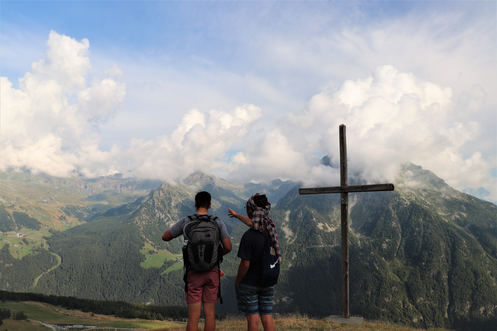
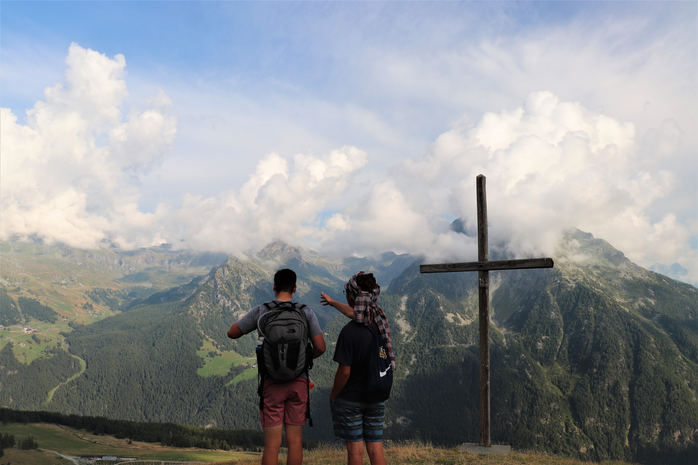
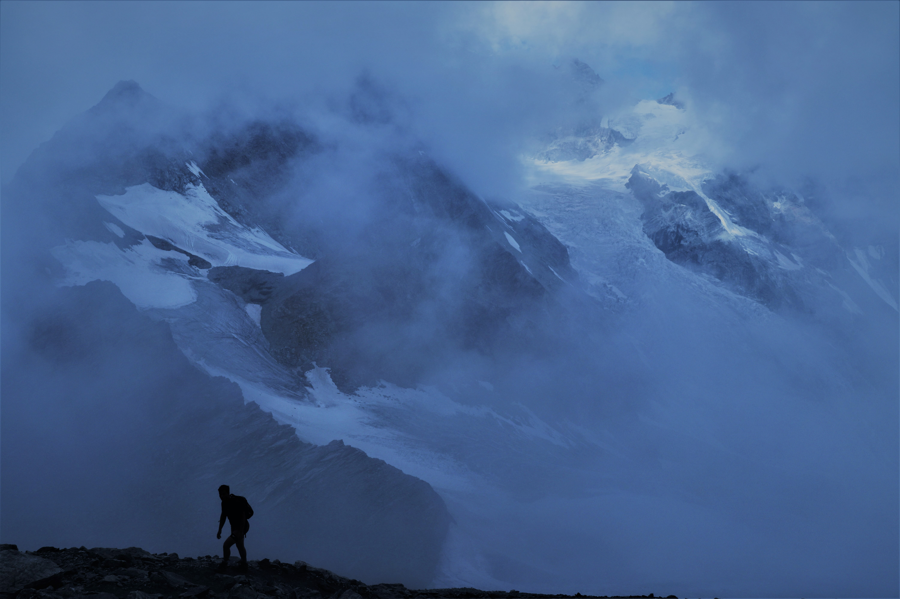
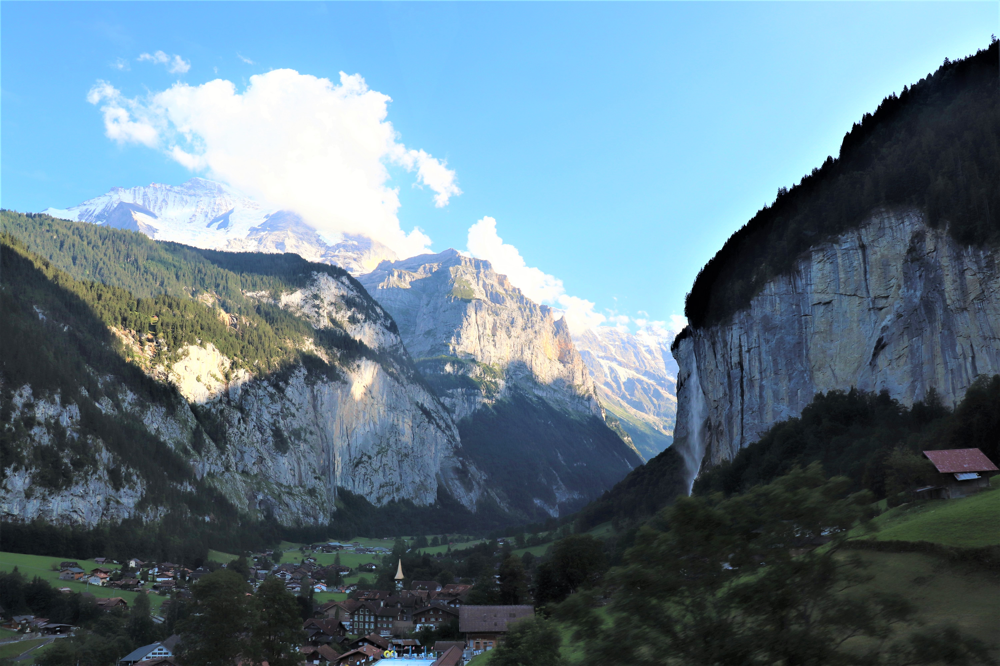
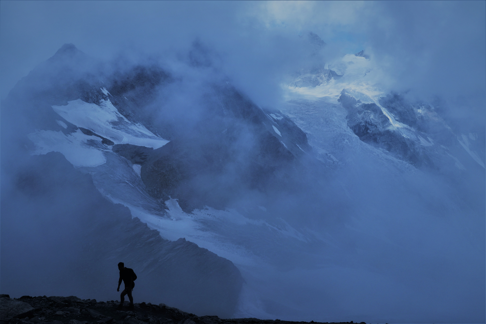
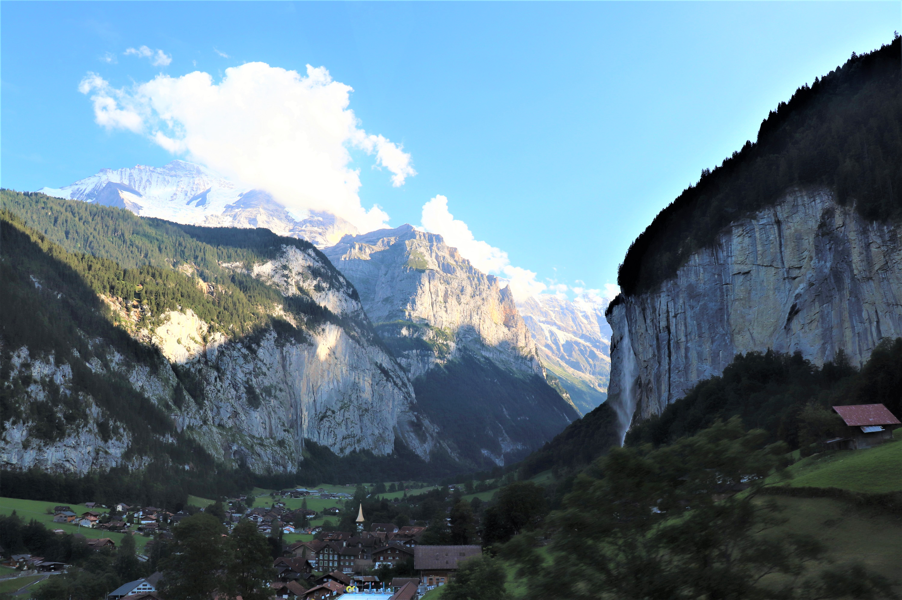

Our biggest adventure of all, a friend and I flew to Milan, Italy, to meet our buddy who has a family cabin in the mountains of north west Italy. There we were met with a story book mountain village surrounded by miles of mountain trails to hike. After a few days we headed off to Switzerland to hike and explore some of the most intense mountain landscapes in the world. Some notable spots are:
 


 


